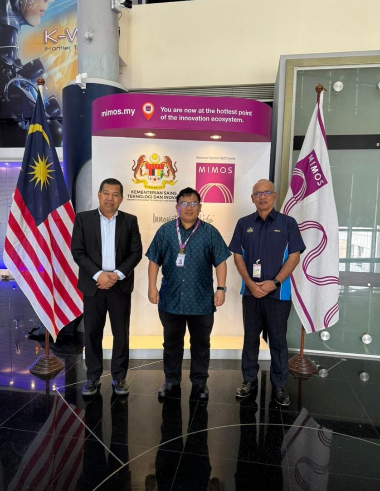

Modul Latihan Dan Program
PAKAR Malaysia menawarkan program yang fokus pada pendidikan anti-rasuah, integriti, dan tadbir urus yang baik untuk meningkatkan kesedaran dan mengukuhkan amalan organisasi.
PEMAHAMAN ISO 37001: ABMS 2016
Program yang bertujuan untuk mendidik organisasi dan individu mengenai langkah-langkah anti-rasuah dan amalan terbaik.
Kandungan Program
- Pengenalan kepada ISO37001: ABMS 2016
- Peranan & Tanggungjawab Juruaudit Dalaman
- Merancang Audit
- Melaksanakan Audit dan Menyediakan Laporan
- Tindak Lanjut Audit
- Studi Kes
PEMEGANGAN TANGGUNGJAWAB SEKSYEN 17(A) AKTA MACC 2009

Berkolaborasi dengan masyarakat untuk meningkatkan kesedaran tentang integriti dan usaha anti-rasuah.
Kandungan Program
- Memahami Integriti & Tadbir Urus Yang Baik
- Sistem Perundangan di Malaysia
- Memahami Peranan dan Fungsi MACC
- Kesalahan Rasuah di bawah Akta MACC 2009
- Undang-Undang Malaysia - AMLATFPUA 2001, Akta Perlindungan Saksi 2009, Akta Perlindungan Pemberi Maklumat 2010
KONSULTASI DAN LATIHAN MENUJU PERSIJILAN ISO 37001: ABMS 2016

Berkolaborasi dengan masyarakat untuk meningkatkan kesedaran tentang integriti dan usaha anti-rasuah.
Kandungan Program
- Kerangka ISO37001: ABMS 2016
- Memahami Undang-undang berkaitan ISO37001: ABMS 2016
- Sesi Pembimbingan mengenai SOP dan Prosedur
- Latihan Juruaudit Dalaman
- Konsultasi mengenai Tindakan Pembetulan selepas audit CB
- Program Kesedaran ISO37001: ABMS 2016 untuk semua pihak berkepentingan
PROGRAM KESADARAN ANTI-RASUAH

Berkolaborasi dengan masyarakat untuk meningkatkan kesedaran tentang integriti dan usaha anti-rasuah.
Kandungan Program
- Memahami ISO37001: ABMS 2016
- Objektif ISO37001: ABMS 2016
- Kerangka ABMS dan Elemen Penting dalam ISO37001: ABMS 2016
MEMAHAMI CARA TERBAIK DALAM MENYIASAT KES

Berkolaborasi dengan masyarakat untuk meningkatkan kesedaran tentang integriti dan usaha anti-rasuah.
Kandungan Program
- Ciri-ciri Penyiasat Berkemahiran
- Memahami Perilaku Manusia
- Pengumpulan Bukti
- Temu Duga Saksi dan Orang Yang Dituduh
- Menyediakan Laporan Penyiasatan
WORKSHOP: BAGAIMANA MENJADI JURUAUDIT DALAMAN YANG BERPENGALAMAN UNTUK ISO 37001: ABMS 2016

Berkolaborasi dengan masyarakat untuk meningkatkan kesedaran tentang integriti dan usaha anti-rasuah.
Kandungan Program
- Pengenalan kepada ISO37001: ABMS 2016
- Peranan & Tanggungjawab Juruaudit Dalaman
- Merancang Audit
- Melaksanakan Audit dan Menyediakan Laporan
- Tindak Lanjut Audit
- Studi Kes